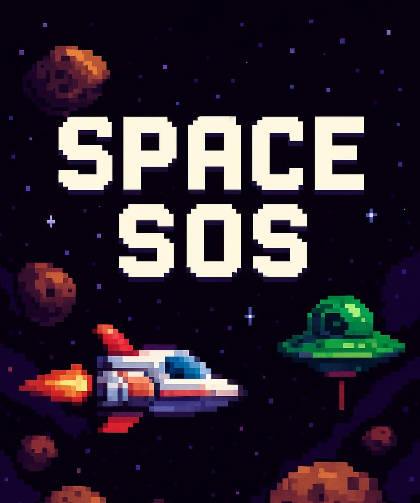

Featured Project

Space SOS
A Space Survival Rescue Game where every second counts.
Space SOS is an intense arcade-style space survival game developed using Phaser.js. Navigate through asteroid fields, rescue lost signals, avoid enemy drones, and survive. A fast-paced reflex challenge built by a dedicated indie team.
Tech Stack: JavaScript • Phaser 3 • Pixel Art
Developed by NoorForge Team (3 Members)